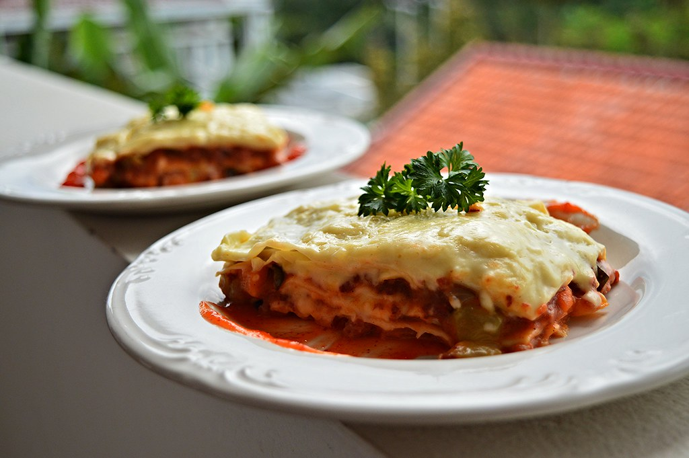

Lasagna

Descripción
La lasagna es un plato clásico italiano que combina capas de pasta, carne, salsa de tomate y quesos fundidos. Es una comida reconfortante, ideal para compartir en familia o con amigos. Su combinación de sabores y texturas la convierte en una opción irresistible para cualquier ocasión.
Ingredientes
- 12 placas de pasta para lasagna
- 500 gramos de carne picada
- 1 cebolla grande picada
- 2 dientes de ajo picados
- 700 ml de salsa de tomate
- 300 gramos de queso mozzarella rallado
- 200 gramos de queso parmesano rallado
- 500 ml de salsa bechamel (manteca, harina, leche, nuez moscada)
- Aceite de oliva
- Sal y pimienta al gusto
- Orégano y albahaca al gusto
Pasos
- Precalentar el horno a 180°C.
- En una sartén con aceite de oliva, rehogar la cebolla y el ajo hasta que estén transparentes.
- Añadir la carne picada, salpimentar y cocinar hasta dorar.
- Agregar la salsa de tomate, orégano y albahaca, cocinar a fuego bajo por 20 minutos.
- Cocinar las placas de pasta en agua hirviendo con sal hasta que estén al dente, escurrir y reservar.
- Preparar la salsa bechamel derritiendo manteca, agregando harina, y luego leche caliente hasta que espese. Salpimentar y agregar nuez moscada.
- En una fuente para horno, colocar una capa de salsa bechamel, luego placas de pasta, salsa de carne, bechamel y queso mozzarella. Repetir capas.
- Terminar con una capa de bechamel y espolvorear queso parmesano por encima.
- Cubrir con papel aluminio y hornear por 30 minutos.
- Quitar el papel aluminio y hornear 10 minutos más para dorar la superficie.
- Dejar reposar 10 minutos antes de servir.
Home